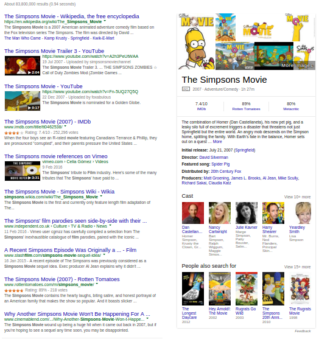
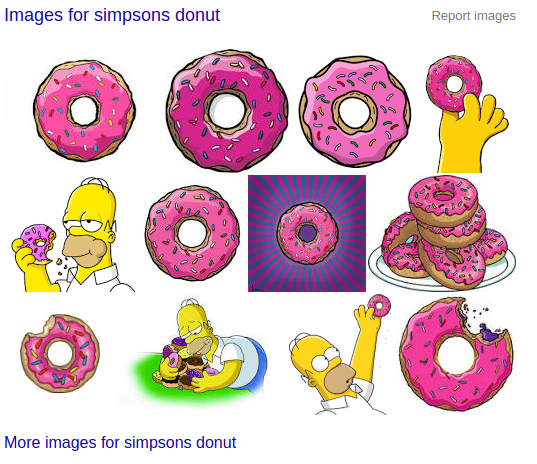
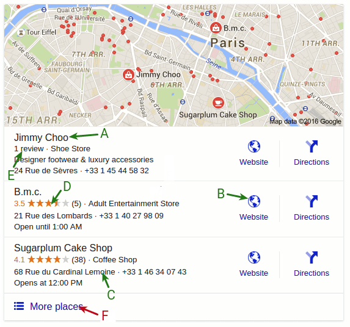
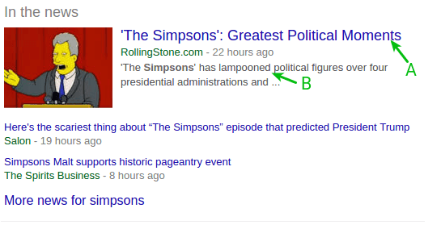
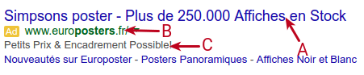

Parse a Google Page

Back to the general google documentation.
Important notice about google update
The current documentation can change at any time. As soon as google changes its page structure the following example may stop to work correctly.
We place efforts to monitor the changes but we cannot guarantee that everything will be available at any time.
Remember to tune your composer.json correctly to make sure to bring new changes as they come. We use the semantic versioning and the best practise is to use the tilde operator.

A google SERP can contain different type of result. Firstly they are divided in three distinct regions: natural (organic), paid (adwords) and graph results and each of them has its own results types. Graph result are currently not supported by the library.
Through there is a great diversity of results the library gives you the api to work with them, here we document what are their differences.
Natural Results
Natural results (aka organic results) are main results of the page.
Each natural result has a position and some available data. You can access them the following way (see the foreach loop):
use Serps\SearchEngine\Google\GoogleClient;
use Serps\SearchEngine\Google\GoogleUrl;
$googleClient = new GoogleClient($httpClient);
$googleUrl = new GoogleUrl();
$google->setSearchTerm('simpsons');
$response = $googleClient->query($googleUrl);
$results = $response->getNaturalResults();
foreach($results as $result){
// Here we iterate over the result list
// Each result will have different data based on its type
}
Each of the result from the loop will have the following methods available:
getTypes(): the types of the resultis($type): check if the result is of the given typegetDataValue($type): Get the given data from the resultgetData(): Get the all the data of the resultgetOnPagePosition(): Get the position of the result on the page (not aware of the pagination)getRealPosition(): Get the global position of the result (aware of the pagination)
The difference between each result type is the list of data available with getDataValue($type) and getData().
See bellow for all available data per result type.
Natural Result Types
Result types can be accessed through the class NaturalResultType,
use Serps\SearchEngine\Google\NaturalResultType;
if($result->is(NaturalResultType::CLASSICAL)){
// Do stuff
}
// You can also check many types at once
// Here we check if the result is classical or image group
if($result->is(NaturalResultType::CLASSICAL, NaturalResultType::IMAGE_GROUP)){
// Do stuff
}
From the resultSet you can also access all the results matching one of the given type:
// Get all the results that are either classical or image_group
$results = $results->getResultsByType(NaturalResultType::CLASSICAL, NaturalResultType::IMAGE_GROUP);
Classical
These results are the common natural results that have always existed in google.

Available with
NaturalResultType::CLASSICAL
Data
titlestring [A]urlstring: the url targeted on clicking the titledestinationstring [B]: either a url or a breadcrumb-like destinationdescriptionstring [C]
Example
use Serps\SearchEngine\Google\NaturalResultType;
$results = $response->getNaturalResults();
foreach($results as $result){
if($result->is(NaturalResultType::CLASSICAL)){
$title = $result->getDataValue('title');
$url = $result->getDataValue('url');
}
}
Classical Video
This type an extension of the classical result, but it refers to a video result.
The video result can be illustrated with either a thumbnail or a large image.

Available with
NaturalResultType::CLASSICAL_VIDEONaturalResultType::CLASSICAL
Data
titlestring [A]urlstring: the url targeted on clicking the titledestinationstring [B]: either a url or a breadcrumb-like destinationdescriptionstring [C]videoLargebool: true if the video is image is large (usually first result)videoCoverstring: the video picture as given by google - either an image url or a base64 encoded image
Example
use Serps\SearchEngine\Google\NaturalResultType;
$results = $response->getNaturalResults();
foreach($results as $result){
if($result->is(NaturalResultType::CLASSICAL_VIDEO)){
$title = $result->getDataValue('title');
if($result->getDataValue('videoLarge'){
// ...
}
}
}
Image Group
Images that appear as a group of results.

Available with
NaturalResultType::IMAGE_GROUP
Data
imagesarray: the list of images that compose the image group, each image contains:sourceUrlUrl: the url where the image was foundtargetUrlUrl: the url reached on clicking the imageimagestring: the image data as specified by google (either an image url or a base64 encoded image)
moreUrlUrl: The url corresponding to the google image search
Example
use Serps\SearchEngine\Google\NaturalResultType;
$results = $response->getNaturalResults();
foreach($results as $result){
if($result->is(NaturalResultType::IMAGE_GROUP)){
foreach($result->getDataValue('images') as $image){
$sourceUrl = $image->getDataValue('sourceUrl');
}
}
}
Map
A result illustrated by a map and that contains sub-results.

Available with
NaturalResultType::MAP
Data
localPackarray: The sub results for the map:titlestring [A]: Name of the placeurlUrl [B]: Website of the sub-resultstreetstring [C]: The address of the sub-resultstarsstring [D]: The rating of the result as a numberreviewstring [E]: The review string as specified by google (e.g '1 review')phonestring [G]: The phone number
mapUrlUrl [F]: The url to access the map search
Example
use Serps\SearchEngine\Google\NaturalResultType;
$results = $response->getNaturalResults();
foreach($results as $result){
if($result->is(NaturalResultType::MAP)){
foreach($result->getDataValue('localPack') as $place){
$website = $place->getDataValue('website');
}
}
}
Tweet Carousel
Recent tweet list from an user matching the search keywords.

Available with
NaturalResultType::TWEETS_CAROUSEL
Data
titlestring [A]urlstring: The url reach when clicking the titleuserUrl: The author of the tweets
Example
use Serps\SearchEngine\Google\NaturalResultType;
$results = $response->getNaturalResults();
foreach($results as $result){
if($result->is(NaturalResultType::TWEETS_CAROUSEL)){
$user = $result->getDataValue('user');
}
}
In the News
Recent news results.

Available with
NaturalResultType::IN_THE_NEWS
Data
newsarraytitlestring [A]descriptionUrl [B]urlstring: The url reached when clicking the title
Example
use Serps\SearchEngine\Google\NaturalResultType;
$results = $response->getNaturalResults();
foreach($results as $result){
if($result->is(NaturalResultType::IN_THE_NEWS)){
$title = $result->getDataValue('title');
}
}
Adwords Results
The google client offers an Adwords parser.
$adwordsResults = $response->getAdwordsResults();
foreach($results as $result){
// do stuff
}
Adwords sections
Adwords results are composed from 3 distinct sections. These sections can be at the top, at the right or at the bottom of the natural results. See the schema:

By default all results are available in the result set, if you need to get results from a section, you can use the section as a type filter:
use Serps\SearchEngine\Google\AdwordsResultType;
$adwordsResults = $response->getAdwordsResults();
$topResults = $adwordsResults->getResultsByType(AdwordsResultType::SECTION_TOP);
$rightResults = $adwordsResults->getResultsByType(AdwordsResultType::SECTION_RIGHT);
$bottomResults = $adwordsResults->getResultsByType(AdwordsResultType::SECTION_BOTTOM);
foreach($topResults as $result){
// Do stuff...
}
Adwords Types
Ad
Ads results are the basics results from adwords.

Available with
AdwordsResultType::AD
Data
titlestring [A]urlurl: The url reach when clicking the titlevisurlstring [B]: The visual urldescriptionstring [C]
Example
use Serps\SearchEngine\Google\AdwordsResultType;
$results = $response->getAdwordsResults();
foreach($results as $result){
if($result->is(AdwordsResultType::AD)){
$url = $result->getDataValue('url');
}
}
Shopping
These are the results from google shopping/merchant.

Available with
AdwordsResultType::SHOPPING_GROUP
Data
productsarray: The product list. Each product contains the following items:titlestring [A]imagestring [B]urlurl: The url reached when clicking the titletargetstring [C]: The target website as shown by googlepricestring [D]: The price as show by google
Example
use Serps\SearchEngine\Google\AdwordsResultType;
$results = $response->getAdwordsResults();
foreach($results as $result){
if($result->is(AdwordsResultType::SHOPPING_GROUP)){
foreach($result->getDataValue('products') as $item){
$title = $item->getDataValue('title');
}
}
}
Related searches
Not implemented yet.
Custom parsing
Sometimes you need information that are not available in out parser.
First of all, search if someone already asked for this feature on the issue tracker.
If you don't find a trace of this feature, but you still consider that this feature is important, then open an issue and let's discuss it. This is very important because if the feature is implemented in the library it will take advantage of being updated on google updates, and you wont have to maintain it.
Back from the issue tracker, no one mentioned it and you still want to parse the information by yourself. Alright, here are the tools your need.
Query with css
The easiest way to do it for a web developer: with css.
$response = $googleClient->query($googleUrl);
// Returns \DOMNodeList
$queryResult = $response->cssQuery('#someId');
if ($queryResult->length == 1) {
// You can query again to find items in the previous context.
// Gets all items with the class 'someClass' within the element with the id 'someId'
$queryResult = $response->cssQuery('.someClass', $queryResult->item(0));
} else {
// some errors...
}
It works exactly as DOMXPath::query does. Actually the css is translated to xpath and DOMXPath::query is called on the dom element.
Query with xpath
That's very similar to the css way, except that you will use xpath.
$response = $googleClient->query($googleUrl);
$queryResult = $response->cssQuery('descendant::div[@id="someId"]');
if ($queryResult->length == 1) {
// Gets all 'a' tags inside the element with the id 'someId'.
$queryResult = $response->cssQuery('a', $queryResult->item(0));
} else {
// some errors...
}
There is also a shortcut to the xpath object.
$response = $googleClient->query($googleUrl);
$xpath = $response->getXpath();
$xpath->query('someXpath');
Query with xpath
That's very similar to the css way, except that you will use xpath.
$response = $googleClient->query($googleUrl);
$queryResult = $response->cssQuery('descendant::div[@id="someId"]');
if ($queryResult->length == 1) {
// Gets all 'a' tags inside the element with the id 'someId'.
$queryResult = $response->cssQuery('a', $queryResult->item(0));
} else {
// some errors...
}
Manipulate the DOM object
You can get the DOM object to manipulate it, or to save it in a file.
$response = $googleClient->query($googleUrl);
$dom = $response->getDom();
// Writes the dom content in the file 'file.html'
$dom->save('file.html');